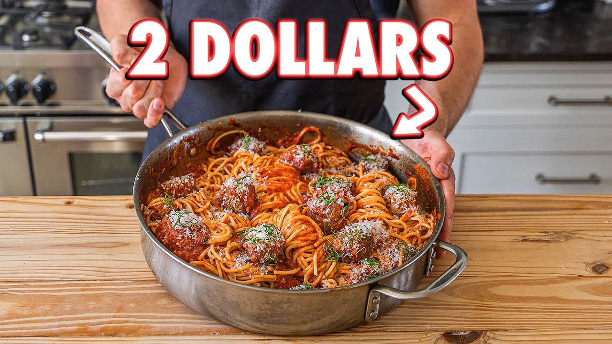

2$ Spaghetti

Spaghetti and meatballs should be an unforgettable experience that costs you little money to make. We’re going to do that today....
Ingredients
- spaghetti
- 1/4 (123g) finely chopped mortadella
- 1 lb (454g) ground beef
- 1 3/4 tsp (12g) fine sea salt
- 3 cloves garlic, finely chopped
- 1/4 cup (20g) fresh grated pecorino or parmesan
- black pepper to taste
- 1/2 cupt (35g) panko bread crumbs
- 1 whole egg
- 1/4 cup (50g) extra virgin olive olive
- 4 cloves garlic, thinly sliced
- 1 tsp (2g) red pepper flakes
- 1 28 oz can crushed tomatoes
- 1 bunch of basil
- freshly grated Parmigiano for serving
- chiffonade basil for serving
Instructions
- In a bowl, place your chopped mortadella, combine it with the ground beef, salt, garlic, parmesan cheese, and black pepper, mix it well, and add the panko and eggs and mix again until emulsified and tacky.
- Use a large cookie scoop to make the meatballs, around twenty, place them on a sheety tray and roll them into balls
- In a large sautee pan, over medium-high, pour enough olive oil to cover the bottom of the pan; once the oil is hot, add all the meatballs in one single layer, and sear for about two minutes, flip and sear one or two more sides, until golden brown. Remove the meatballs from the pan and reserve
- In the same where the meatballs were cooked, reduce the heat to medium, add the garlic, and sautee for about five minutes, add the pepper flakes, saute for thirty seconds and add your crushed tomatoes - stir, and season with salt and a pinch of sugar. Then add the meatballs, bring them to a simmer, and reduce the heat to medium-low and simmer for five to eight minutes. Halfway through this process, add the basil, slightly bruised, let it cook until the meatballs cook all the way through
- Reserve one cup of sauce for plating
- Place spaghetti in a pot of boiling water that has been seasoned generously with salt. Cook aacccording to package instructions or until done
- Using tongs, pick up the pasta, let it drain slightly, add it to your sauce until all your pasta has been added, and add a couple spashes of your pasta water. Toss it together until all the pasta is coated evenly in the sauce
- Place one portion of pasta in a shallow bowl, pour some sauce on top and two or three meatballs, grate some fresh pecorino or parmesan cheese, and finally, some chiffonade fresh basil